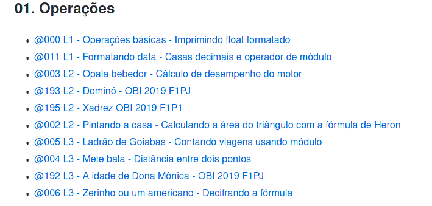

API de publicação automática de VPL’s no Moodle/Moodle2
É necessário primeiro baixar as bibliotecas mechanicalsoup e bs4 usando o pip
Instale o python e o pip. Depois instale as dependências com
pip install mechanicalsoup bs4baixe o arquivo mapi.py, coloque como executável, e
adicione a algum lugar do seu path.
Se não quiser adicionar diretamente no path, você terá que invocá-lo diretamente utilizando
$ python mapi.py
#ou
$ chmod +x mapi.py
$ ./mapi.pyPode também incluir um alias no seu arquivo “.bashrc” ou “.zshrc” para chamar o script de qualquer lugar
#arquivo .bashrc
alias mapi='/path/completo/para/mapi.py'pronto, agora basta invocar mapi de qualquer pasta. A partir de
agora, vou me referir ao comando apenas como mapi. Para
conferir a instalação, basta abrir o terminal e digitar
mapi -h.
Para criar o arquivo default com o acesso ao seu curso basta executar o seguinte comando no terminal, substituindo os valores de usuário, senha e número do curso do moodle. Os campos de url e remote já estão configurados para o curso de fup. Será criado um arquivo .mapirc na sua pasta home.
$ mapi setup --username SEU_USUARIO --password SUA_SENHA --course O_NUMERO_DO_SEU_CURSO_DO_MOODLE \
--url https://moodle2.quixada.ufc.br --remote https://raw.githubusercontent.com/qxcodefup/moodle/master/basePara obter o número do curso, basta olhar o último número na URL do seu curso do moodle.
Se não passar o parâmetro –password, a senha será perguntada em cada utilização.
Agora basta dar um mapi list para listar o conteúdo do
seu curso. Ou ./mapi.py list dependendo de se ele está no
seu path ou não.
Você pode criar arquivos de configuração para diferentes cursos do
moodle. Você pode criar um arquivo curso.json com o
seguinte formato e valores.
{
"username": "seu_login",
"password": "sua_senha",
"course": "numero_do_curso",
"url": "url_do_moodle",
"remote": "url do repositório remoto de questões"
}Se estiver utilizando o moodle2 da UFC de Quixadá e for trabalhar com a disciplina FUP, seu arquivo será igual a esse, mudando apenas os três primeiros campos.
{
"username": "jiraya",
"password": "espadaOlimpica123",
"course": "516",
"url": "https://moodle2.quixada.ufc.br",
"remote": "https://raw.githubusercontent.com/qxcodefup/moodle/master/base"
}Se preferir, pode deixar o campo password com valor null
"password": null. O script vai perguntar sua senha em cada
operação.
Se não estiver utilizando o arquivo de configuração padrão, terá que passar seu curso sempre por parâmetro na invocação do script. Se tiver utilizando o alias, pode deixar o parâmetro fixo integrado no alias
#arquivo .bashrc
alias mapi='/path/completo/para/mapi.py -c /path/completo/para/curso.json'Para saber se está funcionando, você pode listar as questões do seu curso. Você pode ter múltiplos arquivos de configuração, um para cada curso.
$ mapi -c curso.json listQuando estiver povoado, a saída será como a da figura abaixo. 
Você pode salvar o arquivo de configuração no seu diretório
home como .mapirc e será o arquivo carregado
por default caso não seja explicitado outro arquivo.
$ mapi listPara todo o resto do tutorial, vamos omitir o parâmetro do arquivo de configuração.
O procedimento padrão para inserção é utilizando as questões do
repositório remoto configurado no arquivo de configurações. Para FUP, o
repositório padrão está no github. Depois,
você vai aprender a criar e formatar as próprias questões. No
repositório, cada questão tem um label único no formato de
@xxx.

Para enviar a questão @192 A idade de Dona Mônica para a
seção 5 do seu curso do moodle use:
$ mapi add 195 --section 5Ou de forma resumida
$ mapi add 195 -s 5É possível enviar várias questões ao mesmo tempo com o mesmo comando. Para enviar 002, 003, 004 e 006 para a seção 5:
$ mapi add 002 003 004 006 -s 5O procedimento default se você enviar duas questões com o mesmo label
para a mesma seção, o procedimento padrão é de atualizar a questão
pre-existente. Você pode forçar a inserção duplicada com
--force ou pular a questão caso ela já exista com
--skip para o comando add.
Por default, as questões são inseridas sem prazo para fechamento da
atividade. No caso de provas ou testes, você pode inserir questões
definindo o horário de fechamento com o parâmetro
--duedate yyyy:m:d:h:m.
# para remover todos os vpls da seção 4
$ mapi rm -s 4
# para remover as questões passando os IDS
$ mapi rm -i 19234 18234 19234
# para remover TODOS os vpls do curso
$ mapi rm --allUpdate pode ser utilizado para - Habilitar as opções de execução das questões que você criou manualmente - Atualizar as questões utilizando o label e buscando no repositório por updates. - Atualizar a data de finalização da questão.
Você pode solicitar atualização por label, índice ou para todos as questões de uma seção.
# desabilitando a data de término (duedate) de todas as questões da seção 4 com -s ou --sections
$ mapi update -s 4 --duedate 0
# colocando um duedate específico yyyy:m:d:h:m da questão de label @023 com -l ou --labels
$ mapi update -l 023 --duedate 2021:5:28:11:30
# habilitando as opções de execução para todas as questões do cursos
$ mapi update --all --exec-options
# atualizando todas as suas questões por label utilizando a versão mais atual do servidor remoto
$ mapi update --all --remoteRemover utiliza os mesmos parâmetros -l (labels), -s (sections), -a(all), -i(ids).
O comando de download baixa a questão do moodle para seu computador num formato que permite alteração e reenvio ao moodle.
Para reinserir uma questão baixada do moodle, basta utilizar o parâmetro –local no add.